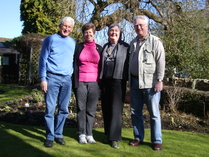

February to July 2010
First, apologies for not updating the Blog since February but we have had a busy few months and problems with the software. Fortunately, Todd has very kindly sorted us out!
At the end of February our friends Gene and George from New England arrived in the UK and spent a night with us before going to the cottage they had rented. We enjoyed some lovely times with them during their extended stay in the UK. Indeed, we headed to California before they returned home
 Just before Easter we set off for our Spring trip to California spending 8 weeks based at our usual place in Palm Springs. Todd was in the process of changing jobs and joining Yahoo based near San Francisco so, not surprisingly, we ended up looking after Alexander, Oliver and Sienna for some weekends whilst Jo and Todd went house hunting. One weekend the weather in San Diego was so dull that we piled the children into the car and went back to Palm Springs!
Just before Easter we set off for our Spring trip to California spending 8 weeks based at our usual place in Palm Springs. Todd was in the process of changing jobs and joining Yahoo based near San Francisco so, not surprisingly, we ended up looking after Alexander, Oliver and Sienna for some weekends whilst Jo and Todd went house hunting. One weekend the weather in San Diego was so dull that we piled the children into the car and went back to Palm Springs!

Jo, Todd and the children also managed 2 more weekends in Palm Springs. On another weekend we celebrated Annie’s birthday and Mothering Sunday (USA calendar) by going camping high in the mountains near the Mexican Border. We had a great time even if the facilities were just a portaloo. 

On the plus side the cabins were brand new and lovely with electric light and a gas powered stove to keep us warm in the very cold night. The setting was idyllic and so peaceful. We rented some boats and the boys fished on the lake. No fish but the worms bought for bait were quite something!
 On another weekend we travelled to San Diego to take part in Sharon’s Walk for the Epilepsy Foundation as members of the A team (arranged by Jo).
On another weekend we travelled to San Diego to take part in Sharon’s Walk for the Epilepsy Foundation as members of the A team (arranged by Jo).
Not a long walk, but the weather was good, lots of walkers, bikers, scooters etc and a great atmosphere.
Afterwards we enjoyed a mass BBQ.
Palm Springs was as usual fantastic although the weather was somewhat cooler than normal and we only had one day over 100F. Nevertheless, another great trip to California. Click here for more photos.
 We were not home for long before Jo and the children came to the UK for 5 weeks. However, before they arrived Annie and Gerry managed a few days camping in Scotland at Roy Bridge near Fort William. The weather was fantastic and we managed some lovely walks as well as a trip to Mallaig on the West Highland Railway. Click here for more photos.
We were not home for long before Jo and the children came to the UK for 5 weeks. However, before they arrived Annie and Gerry managed a few days camping in Scotland at Roy Bridge near Fort William. The weather was fantastic and we managed some lovely walks as well as a trip to Mallaig on the West Highland Railway. Click here for more photos.
We also had Bethany and Callum to stay twice – once before Scotland and once after.. On one visit Bethany had a great time demonstrating her baking skills and, being a good cook, insisted on doing the washing up.


On another occasion we managed a lovely day at the Cotswold Wildlife Park  with Jenny as well as the children. It was amazing how Callum suddenly decided to climb a tree and moved very confidently to a height such that his mum jumped up to go and stand by in case he fell. Bethany seeing the antics decided to join in. We decided to have a group photograph and Annie said she did not want to be in it so Bethany simply put her hand across Annie’s face so that she would not be recognized!! Clever but it did not work.
with Jenny as well as the children. It was amazing how Callum suddenly decided to climb a tree and moved very confidently to a height such that his mum jumped up to go and stand by in case he fell. Bethany seeing the antics decided to join in. We decided to have a group photograph and Annie said she did not want to be in it so Bethany simply put her hand across Annie’s face so that she would not be recognized!! Clever but it did not work.
Click here for more photos.
Jo, Alexander, Oliver and Sienna arrived from San Diego without incident and based themselves at the Nook for the duration of their visit to the UK actually staying with us for nearly 4 weeks of the 5. Todd arrived for the last 2 weeks.
 We had a
We had a wonderful, if not busy time, with trips to Goodrich Castle, and a camping expedition to the Cotswold Farm Park where the children enjoyed their first night under canvas.
wonderful, if not busy time, with trips to Goodrich Castle, and a camping expedition to the Cotswold Farm Park where the children enjoyed their first night under canvas.
The weather was brilliant and the campsite at the park ideal for the children.
 Gerry also took the boys on a day out to the Severn Valley Railway travelling from Kidderminster to Bridgenorth by steam train. The threesome walked into Bridgenorth centre to buy a picnic lunch before returning to Kidderminster but not before the boys had been invited onto the footplate (grandpa was a bit miffed but he was not invited!).
Gerry also took the boys on a day out to the Severn Valley Railway travelling from Kidderminster to Bridgenorth by steam train. The threesome walked into Bridgenorth centre to buy a picnic lunch before returning to Kidderminster but not before the boys had been invited onto the footplate (grandpa was a bit miffed but he was not invited!).
The rest of the time  was spent visiting the parks in Fairford and Quenington, fishing in the water meadow for tiddlers, feeding the ducks, walking to the Cascades, eating iced lollies and a trip to Birdland where the penguins were standing on blocks of ice it was so hot. We also celebrated Alexander’s 6th and Sienna’s 2nd birthdays whilst they were with us. We had a gathering of all the cousins for Alexander’s birthday but Todd’s family were visiting for Sienna’s so no children’s party but a nice birthday cake.
was spent visiting the parks in Fairford and Quenington, fishing in the water meadow for tiddlers, feeding the ducks, walking to the Cascades, eating iced lollies and a trip to Birdland where the penguins were standing on blocks of ice it was so hot. We also celebrated Alexander’s 6th and Sienna’s 2nd birthdays whilst they were with us. We had a gathering of all the cousins for Alexander’s birthday but Todd’s family were visiting for Sienna’s so no children’s party but a nice birthday cake.
 Oliver is passionate about trains and not surprisingly Gerry’s model railway was a particular hit with him. Oliver was so careful and his level of control so fine that he was allowed to take the key, open up the garage, switch on the power and operate the trains unsupervised. Gerry was incredibly moved when packing the trains away on the morning of their departure, Oliver suddenly reached up hugged and kissed him and said “Thank you” – a moment to be remembered for a very long time.
Oliver is passionate about trains and not surprisingly Gerry’s model railway was a particular hit with him. Oliver was so careful and his level of control so fine that he was allowed to take the key, open up the garage, switch on the power and operate the trains unsupervised. Gerry was incredibly moved when packing the trains away on the morning of their departure, Oliver suddenly reached up hugged and kissed him and said “Thank you” – a moment to be remembered for a very long time.
Family P left on 27 July to go back to their new home near San Francisco.
Click here for more photos of their visit.
That brings the Blog up to date – a busy, exhausting but enjoyable few months.